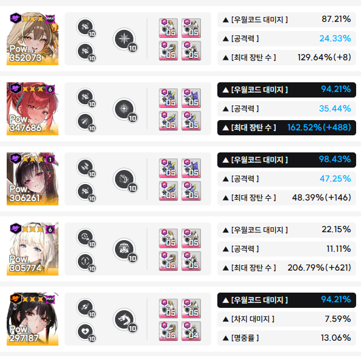
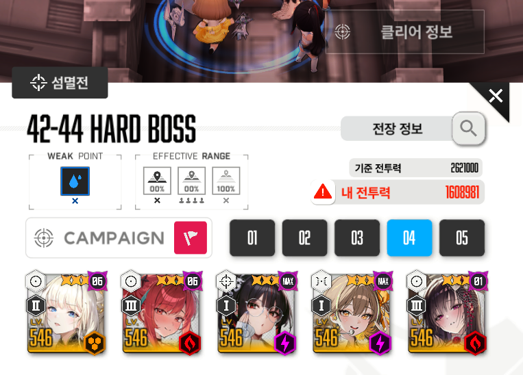
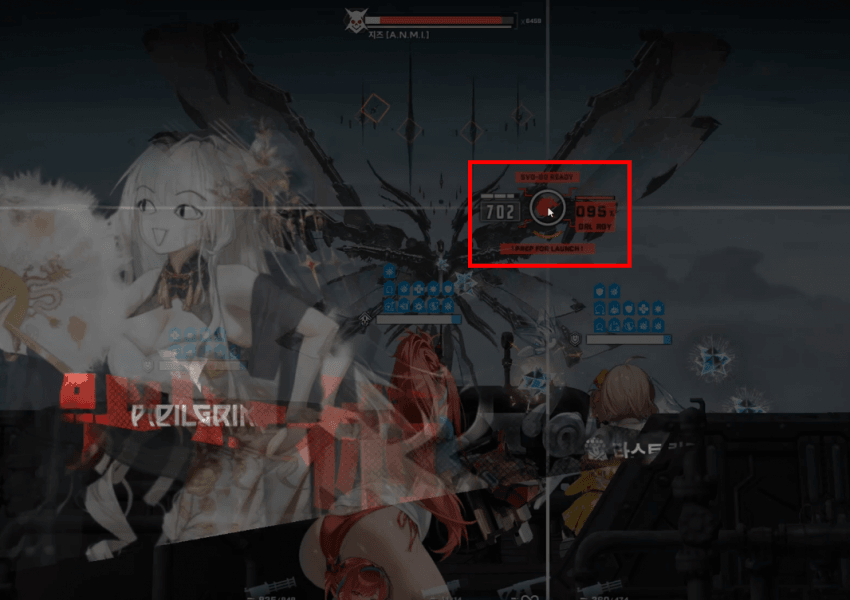
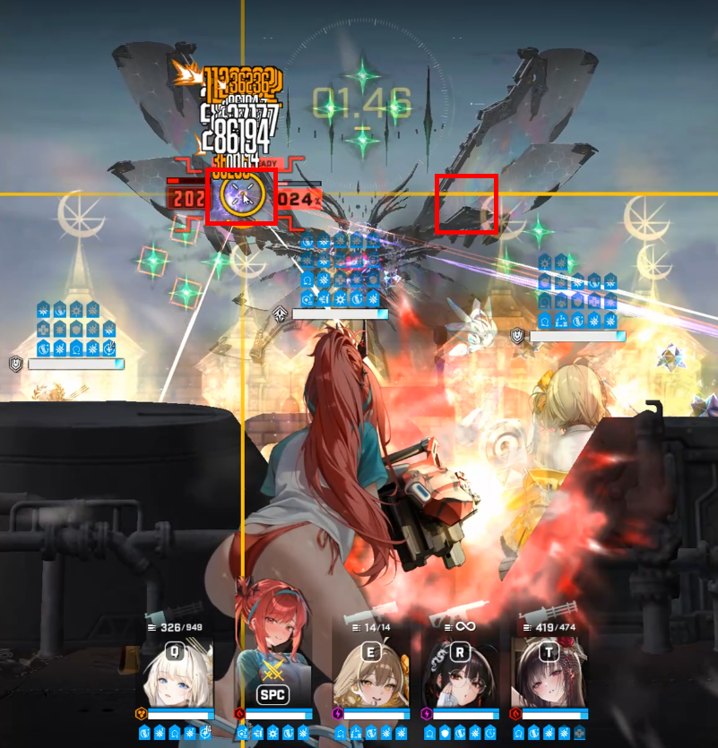
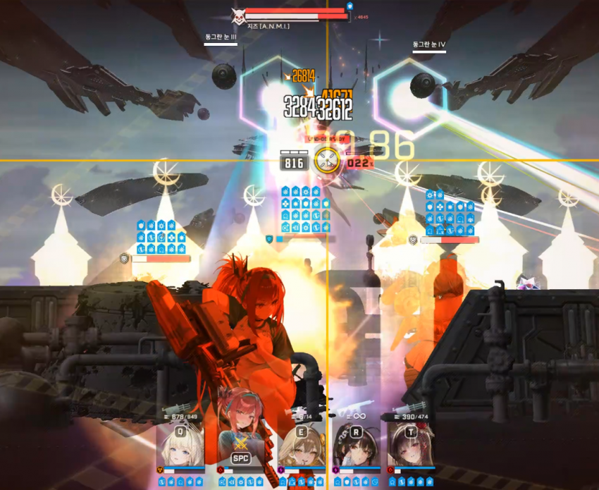
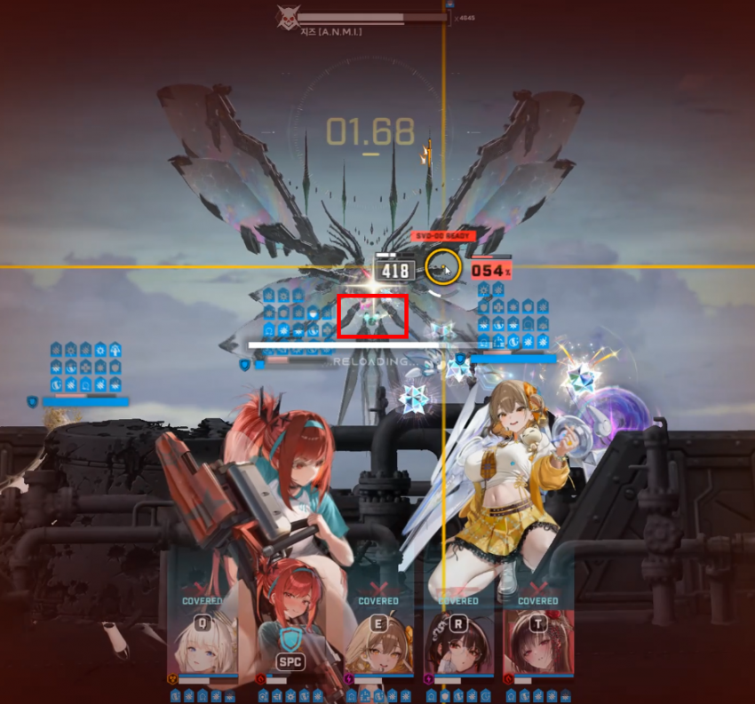
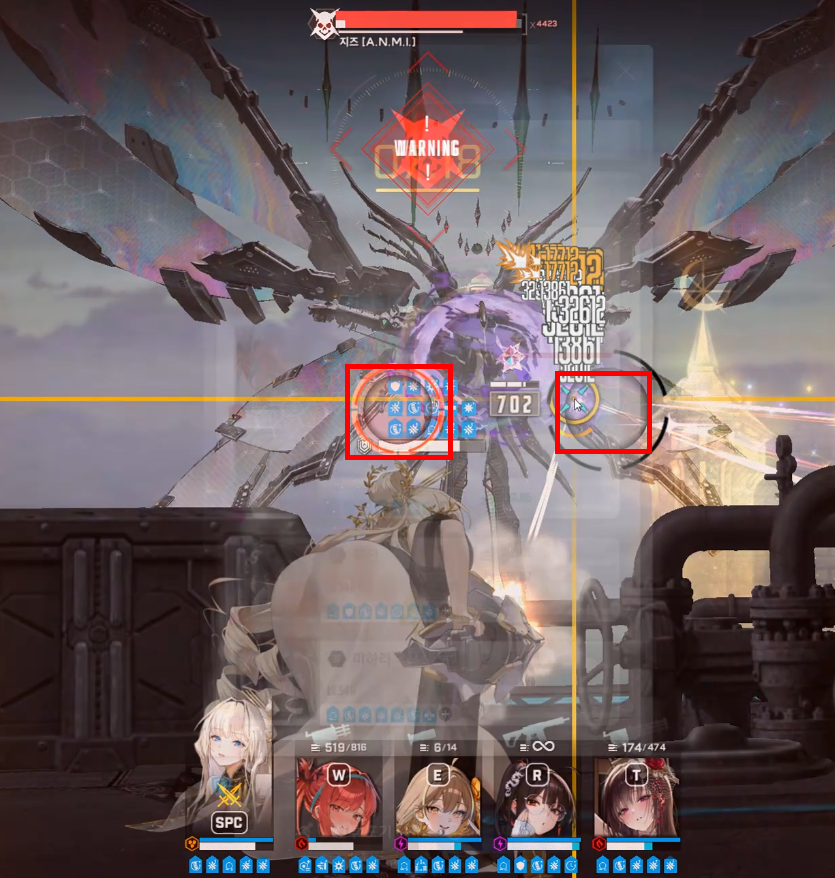
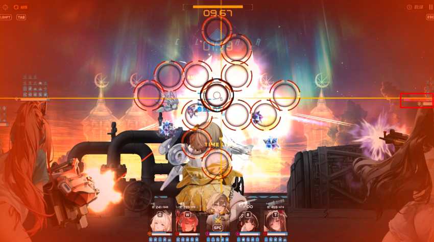
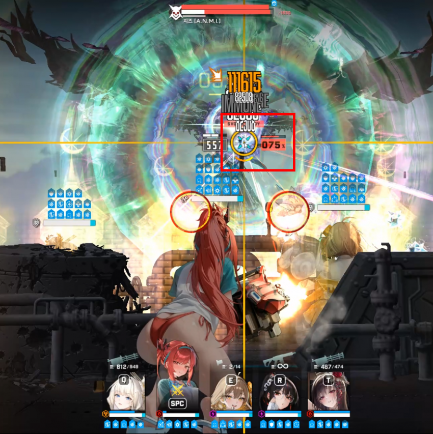
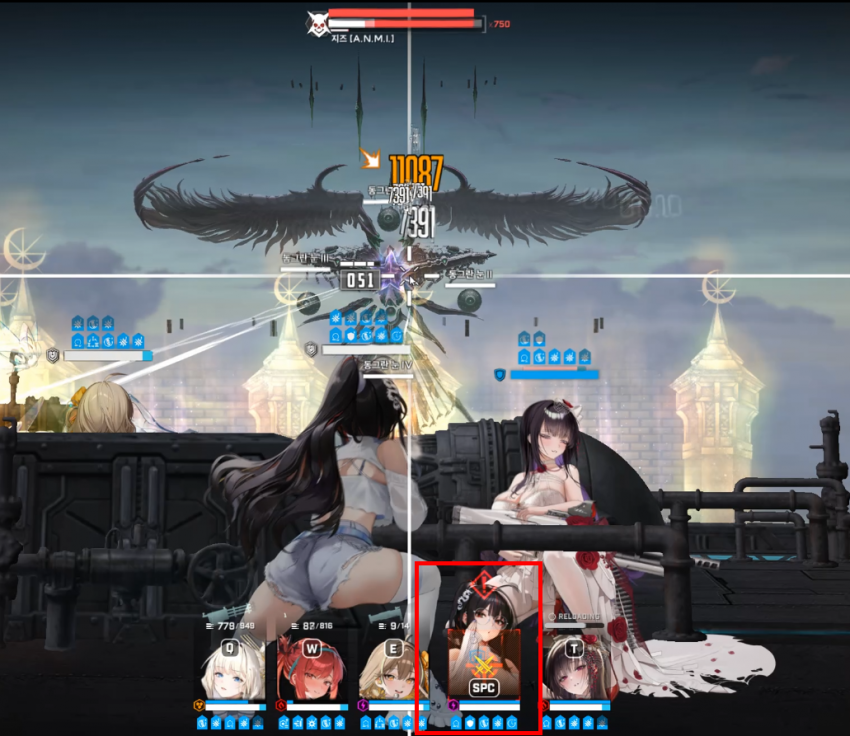

이번에 아니스를 잘 키워서 마스트 대신 넣고 해봄.. 마스트 넣으면 투력 155만이라 라피, 미하라가 죽어버림
지루하고 현학적인 공략 레츠고
비버스트일때는 아니스로 버충 / 직접 잡고 쏘면 버충 10퍼 보너스라는데 잘 몰?루 그런갑다하고 아니스 잡고 버충함
스킬 자동사용 켜두는게 좋음, 이유는 아니스 1버 재진입 후 목단 버스트 쿨 안밀리고 바로 나감
아니스 써서 버스트 조금씩 밀리는 구조인데 버스트 중간중간 칼같이 써서 밀리는거 방지해야함
생존할때만 아니스 버스트쓰면 될수도 있는데 아니스도 나름 딜이 나오는거삼
2:57~ 아니스, 목단, 크라운, 라피 버스트


버스트 사용 전 라피 유탄 90~95퍼면 버스트 빨리 잘 킨거임 / 풀버스트 유탄 먹일수있어서 데미지도 좋을거같음
날개 부분 적정거리 유지하며 요격가능 발사체 유탄으로 부수기 (8번째, 9번째 라피유탄으로 오른쪽 한번, 왼쪽 한번)
2:44~ 아니스, 목단, 크라운 미하라 버스트
가운데 조준하면 지즈가 움직이면서 한번씩 적정거리 벗어나므로 날개나 중앙 살짝 벗어나게 조준
머신건 친구들로 적정거리 벗어나지 않게 조준 및 버스트 약 1~2초 남았을때 라피 강제 재장전
2:31~ 아니스, 목단, 크라운, 라피 버스트
적정거리 조준하면서 라피탄 다 털기
2:19~ 아니스, 목단, 크라운 미하라 버스트


앞에서 버스트 밀렸으면 (버스트 사용시 평균 09:90초 이하로 사용 못햇을때) 목단 버스트 켜지기전에 빔맞고 죽을거임, 못켜면 리트
켰는데 죽으면 캠핑
라피 유탄 3~4번쯤 터지면 초록 구체 날아오는데 전체 엄폐 겸 재장전
2:06~ 아니스, 목단, 크라운, 라피 버스트

버스트 키고 크라운 잡으면서 구체 엄폐컨으로 피하기
구체 지나가자마자 사슬 esc컨 실시 / 위치는 사진 확인
1:53~ 아니스, 목단, 크라운 미하라 버스트
마찬가지로 2초쯤 남을때 라피 재장전
1:40~ 아니스, 목단, 크라운, 라피 버스트
라피유탄 2~3번 터지고나서 1차 속성저지 나오는데 esc컨 이용하여 칼 저지
1:27~ 아니스, 목단, 크라운 미하라 버스트

중간에 2페 전 족자저지 나오는데 가운데 조준 및 esc컨으로 칼저지 후 전체 재장전 / 버스트 시간이 좀 남아있어야 재장전 후 빠른 버충 가능
1:15~ 아니스, 목단, 크라운, 라피 버스트
적정거리 한대라도 더 때리삼
1:02~ 아니스, 목단, 크라운 미하라 버스트

2차 속성저지 최대한 시간 늘려서 저지 후 라피 재장전
주의할점 : 속성저지할때 라피 유탄이 맞으면 옆에것도 터지니까 라피유탄 터지는거 보고 esc컨으로 한칸씩 저지
0:49~ 아니스, 목단, 크라운, 라피 버스트
적정거리 한대라도 더 때리삼
0:36~ 아니스, 목단, 크라운 미하라 버스트

버스트 끝난 후 동그란눈 레이저 엄폐 (주로 목단이나 크라운임 빨간표시뜨니 확인, 버스트 아닐때 목단도 죽음)
0:24~ 아니스, 목단, 크라운, 라피 버스트
뎀지 1들어가기전에 유탄 한방이라도 더터지길 기도 / 여기서 죽여야함..
애매하게 지즈가 살아서 버스트 한방 더 봐야한다면 14초에 전체 엄폐
0:10~ 아니스, 목단, 크라운 미하라 버스트
1페처럼 전체 빔 후 초록빔 전체 엄폐로 피하고 구체 날아오는거는 무시하고 미하라나 라피 잡고 사슬컨 ㄱㄱ
난 미하라가 죽었음.. 받뎀감큐브끼면 투력 낮아져서 라피가 죽음
21초에 빔 맞고 라피랑 미하라까지 살면 100줄 이상 더 깔 수 있음 (사슬컨 성공했을때)
근데 미하라 죽으면 남은애들로 30줄 더 까나?..
1페 속성 저지에서 더 딜 넣으면될거같긴한데 버스트 타이밍 안맞아서 1페는 칼저지 했삼, 본인에게 맞는 방법으로 ㄱㄱ
진짜 솔레보다 더 열심히쳤다..